ANALYSIS-ANONYMITY
| Field | Value |
|---|---|
| Name | [Analysis] Anonymity |
| Slug | 208 |
| Status | raw |
| Category | Informational |
| Editor | |
| Contributors | Alexander Mozeika alexander.mozeika@logos.co, Filip Dimitrijevic filip@logos.co |
Timeline
- 2026-05-28 —
d45eed2— Chore: mirror blochain specs into github/mdbook (#347)
Revision History
| Version | Changes | Date |
|---|---|---|
| 1.0.0 | Initial revision. | 2025-09-08 |
Introduction
In this document we consider anonymity properties of a network constructed from mix nodes. We assume that queueing systems of nodes in the network delay messages. This delay is a random variable from the Geometric distribution. Furthermore, we assume that an adversary is able to observe communication links, but can not distinguish between message. Also a fraction of nodes can be corrupted by adversary but in a static and passive manner.
First, we consider a single (uncorrupted) node observed by an adversary. For this scenario we show that the temporal order of two messages which arrived at the node is preserved, with some probability, when they leave the node. We show that the probability is achieved for a large (average) delay per message and a small difference between the arrival times of messages. For prob. the temporal order of outgoing messages is unbiased and random, and hence adversary does not have advantage over the random guessing.
Second, we consider two (uncorrupted) nodes sending messages, through the path of (uncorrupted) mix nodes, to the receiver node which is corrupted by adversary. We also assume that the adversary is able to observe only communication links connecting sender nodes to the first mix node. Here in this more complicated set up, we show that the probability of preserving temporal order of messages can be , i.e adversary does not have advantage over random guessing.
Analysis
Single node
-
Let us assume that messages and arrived, respectively, at a node at the time and , where . Assuming that the message was delayed by , where is random variable from the Geometric distribution , we have message leaving the node at time .
-
We are interested in the probability , i.e. the probability that the order of two messages arrived at the node is preserved. The latter, for the (rescaled) time-difference , is given by
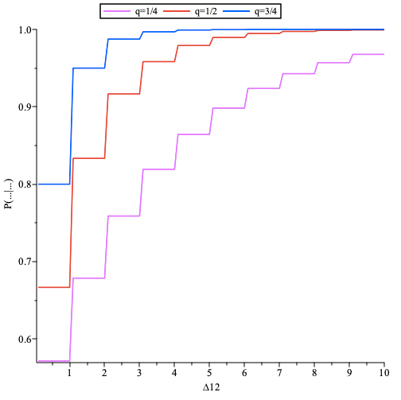
The probability as function of the (rescaled) time-difference , where , plotted for .
Two senders and a single path of mixes scenario: analysis of the FIFO attack
-
A detailed description of the FIFO attack is provided in the Appendix. Here we develop analysis of the FIFO attack for mix nodes with a queuing system.
-
We assume that messages are removed from the out-queue with probability .
-
We assume that nodes and send messages via the same path going through nodes.
-
We assume that each node sends a message to the node at time . A message in the node is delayed by (at most) , where is random variable from the Geometric distribution with parameter , and it is delayed in the link to the node 3 by . Hence a message from node arrives to node 3 at the time .
-
A message from node is delayed by , where is random variable from the Geometric distribution with parameter , while travelling through the nodes. Thus a message from node exits the last node at the time
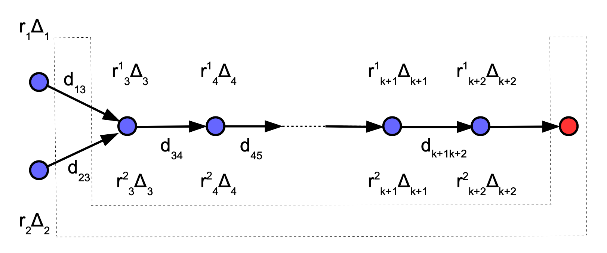
At time the nodes and send messages, via nodes, to the receiver node (red filled circle). The latter is controlled by an adversary which is also observing sender nodes.
-
The events and , i.e. the temporal order of two messages is preserved. These events are mutually exclusive, and hence the probability the at least one of these event will happen is equal to .
-
The probability , i.e. the probability that temporal order of incoming and ougoing messages is preserved, is the probability of success of the FIFO attack.
-
Assuming we have , where is random variable from the negative binomial distribution with parameters and . Furthermore, for and the probability
-
We note that in above the random variables and , where is a random variable from the prob. distr. , models the arrival times of two messages to the first mix node and the first indicator function ensures that only the event contributes to the probability . Furthermore, the random variables and , where is a random variable from the prob. distr. , model arrival times of two messages to the last (receiver) node and the second indicator function ensures that only the event contributes to the probability .
-
In a similar manner, we obtain the probability
- The probability can be approximated by generating a large population of independent random variables sampled from the prob. distributions and , and computing the (empirical) probability
-
In a similar manner we define .
-
We expect that by the law of large numbers.
-
The (empirical) prob. allows us to estimate the probability of success of FIFO attack .
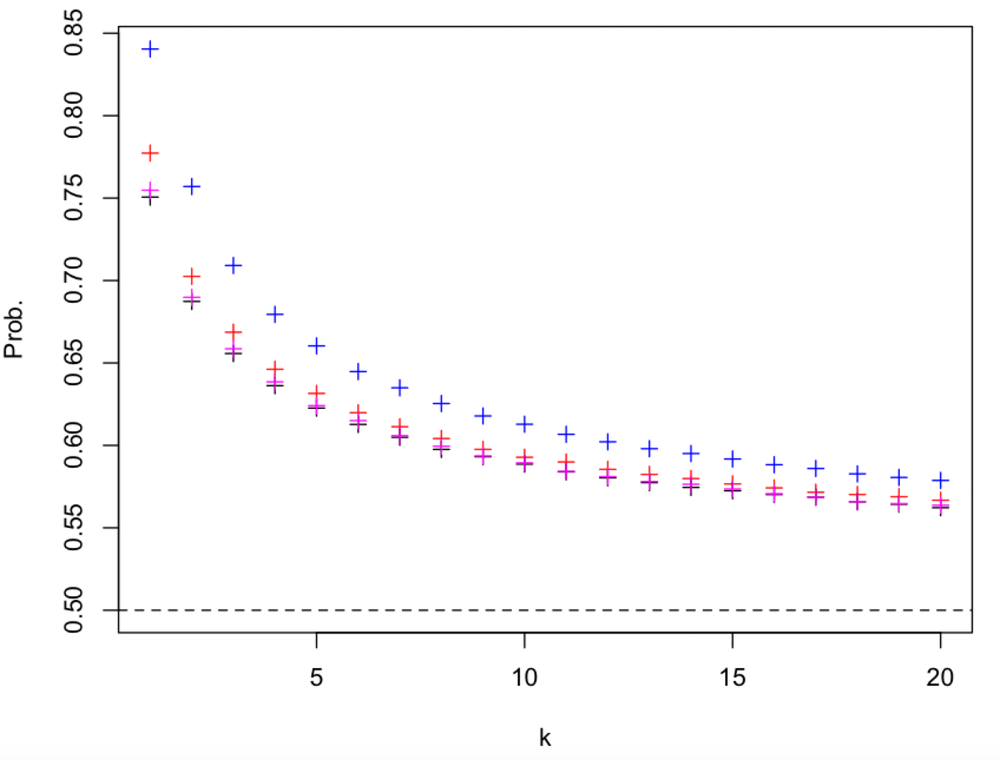
The probability , i.e. the probability of success of FIFO attack, as a function of plotted for (black, magenta, red, blue) and . The population size is equal to .
- We note that the above result, i.e. the probability of success of FIFO attack is a monotonic decreasing function of , is very similar to the result for continuous mixes when , i.e. the connections 1-3 and 2-3 have the same latency. However, when the latter is not true the prob. can be much higher as can be seen in the plot below.
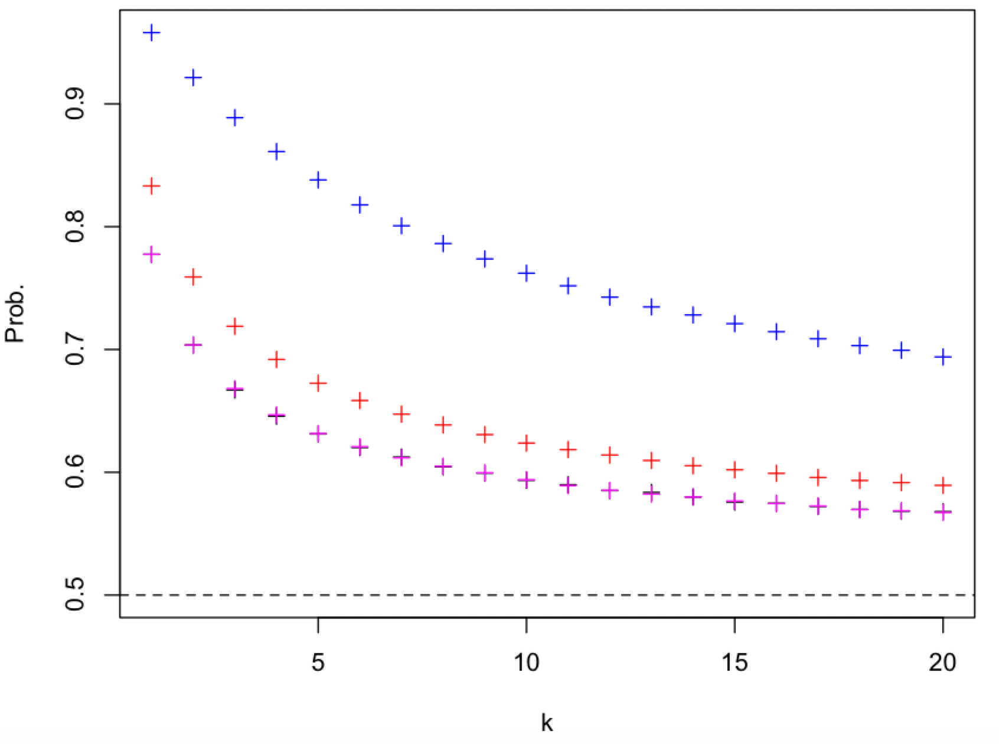
The probability as a function of plotted for and (black, magenta, red, blue). The population size is equal to .
- Let us assume that in our setup the random variables and are sampled from the Geometric distribution with parameter , and for the random variable is sampled from the Geometric distribution with parameter . Thus parameters of delays of the sender and mix nodes are different. The latter can be used to reduce the probability of success, , of the FIFO attack as can be seen in the plot below.
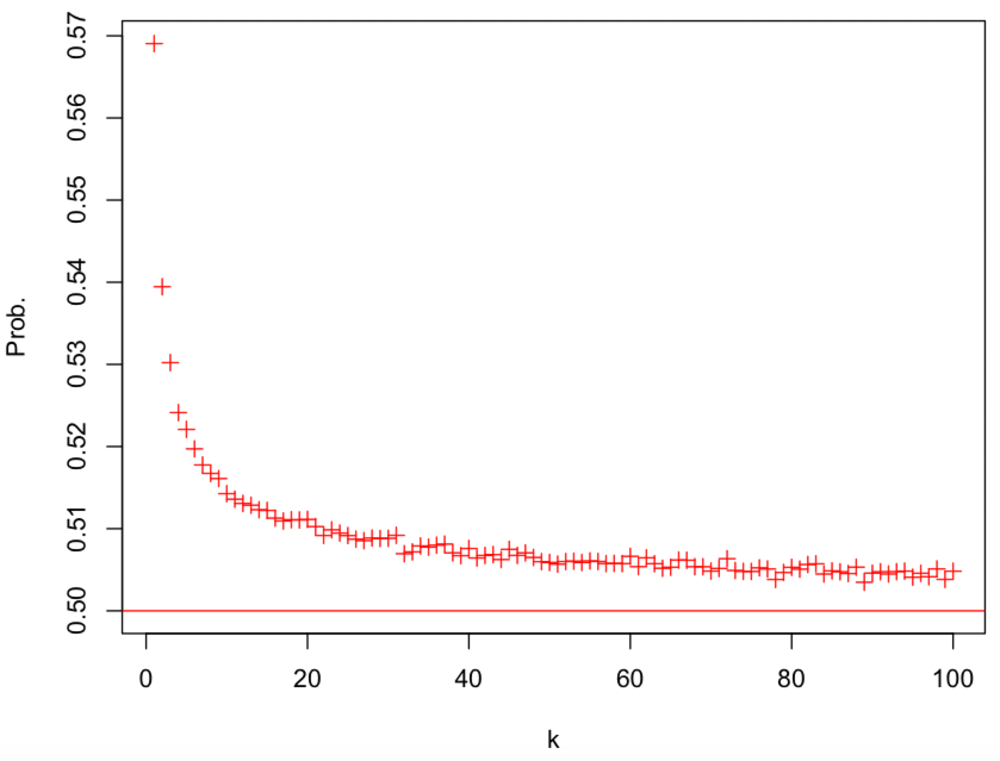
The probability as a function of plotted for , and . The population size is equal to .
-
We note that a message is delayed by the sender node by (on average) and by the mix node by (on average). We note that a similar setup is used in continuous mixes where the ratio plays important role.
-
The probability of success of FIFO attack , , is decreasing with increasing as can be seen in the plots below.
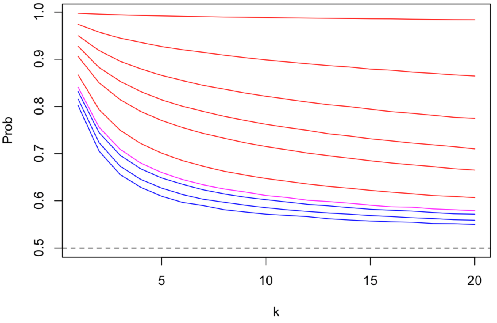
The probability as a function of plotted for , (top to bottom), i.e. , and . The case is plotted in magenta colour, and () and () cases are, respectively, plotted in red and blue colours. The population size is equal to .
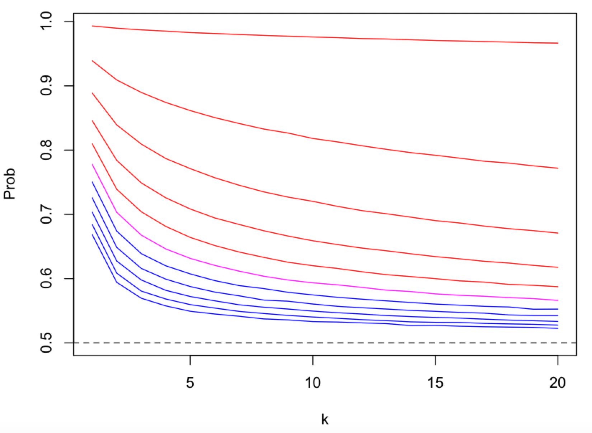
The probability as a function of plotted for , (top to bottom), i.e. , and . The case is plotted in magenta colour, and () and () cases are, respectively, plotted in red and blue colours. The population size is equal to .
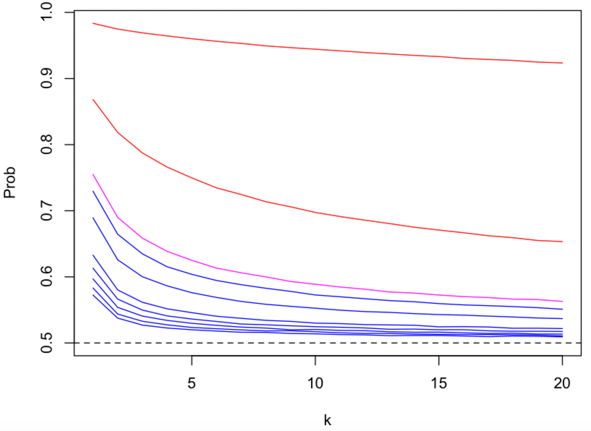
The probability as a function of plotted for , (top to bottom), i.e. , and . The case is plotted in magenta colour, and () and () cases are, respectively, plotted in red and blue colours. The population size is equal to .
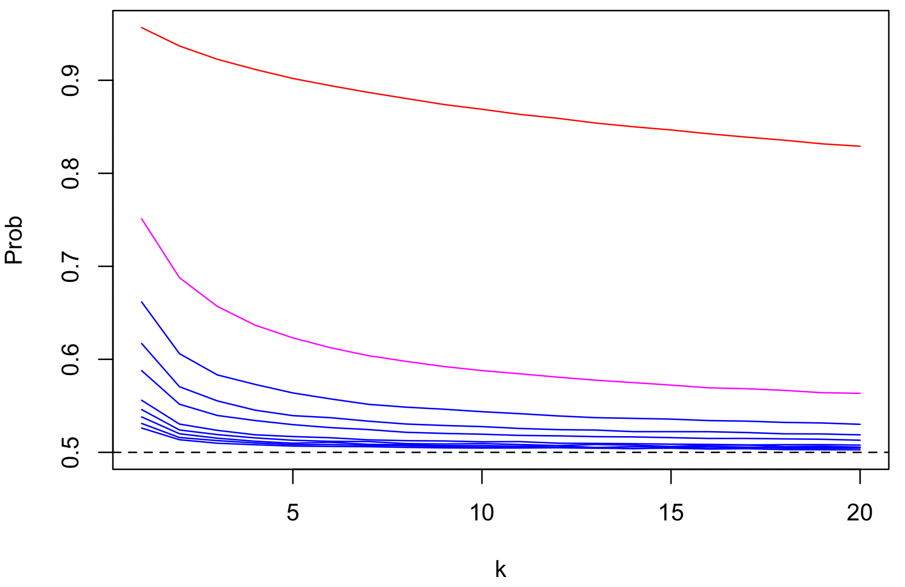
The probability as a function of plotted for , (top to bottom), i.e. , and . The case is plotted in magenta colour, and () and () cases are, respectively, plotted in red and blue colours. The population size is equal to .
-
Above plots suggest that the probability of success of FIFO attack, , approaches , i.e. an adversary has no advantage over the case of random guessing, as . Furthermore, the speed of convergence (in ) to is monotonic increasing function of the ratio .
-
The probability of success of FIFO attack , , is increasing with increasing , i.e. the sender connections 1-3 and 2-3 have different latency, as can be seen by comparing the figure with the plots below.
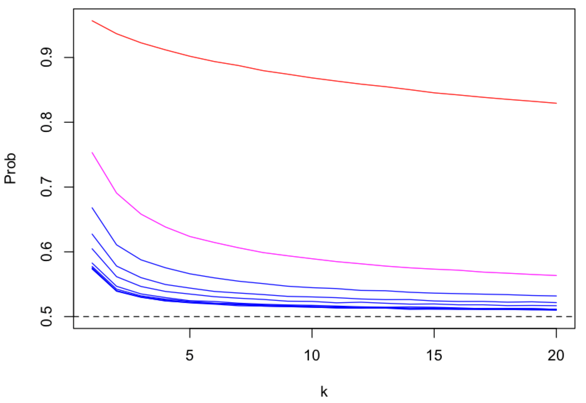
The probability as a function of plotted for , (top to bottom), i.e. , and . The case is plotted in magenta colour, and () and () cases are, respectively, plotted in red and blue colours. The population size is equal to .
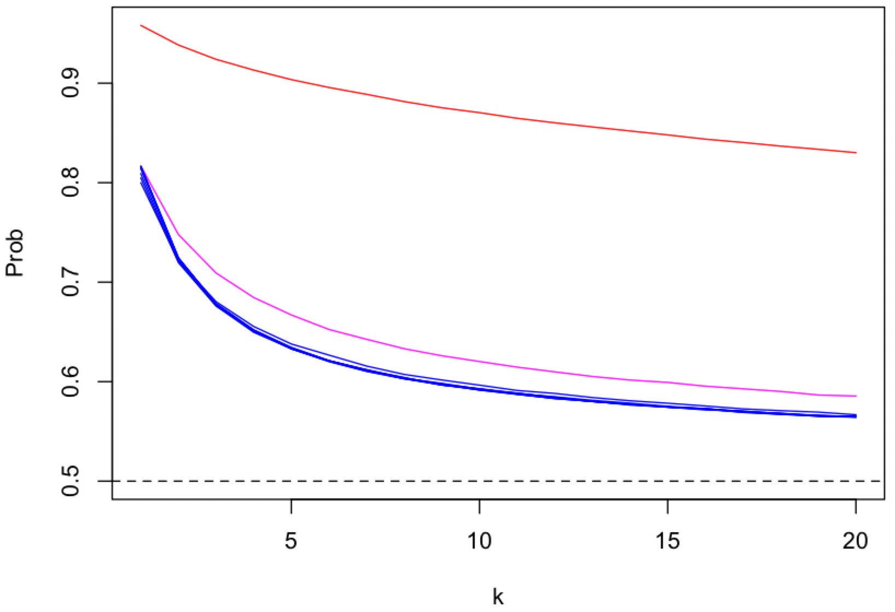
The probability as a function of plotted for , (top to bottom), i.e. , and . The case is plotted in magenta colour, and () and () cases are, respectively, plotted in red and blue colours. The population size is equal to .
- Furthermore, the probability of success of FIFO attack , , is not dependent on the (rescaled) difference of latencies when and is increasing with increasing when as can be seen in the figure below.
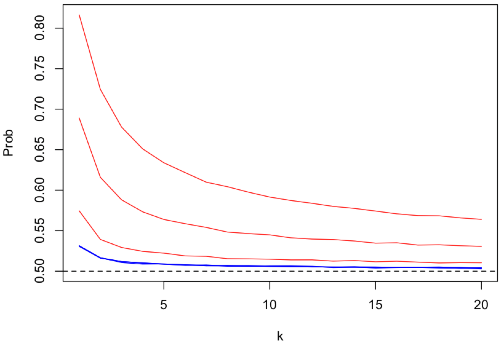
The probability as a function of plotted for , , i.e. , and (bottom to top). The cases are plotted in blue colour and cases are plotted in red colour. The population size is equal to .
- For the probability behaves in a similar way as when as can be seen by comparing above figure with the figure below.
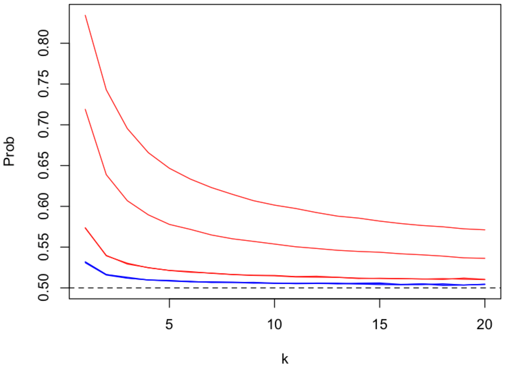
The probability as a function of plotted for , , i.e. , and (top to bottom). The cases are plotted in blue colour and cases are plotted in red colour. The population size is equal to .
- However, the and cases are different as can be seen in the figure below.
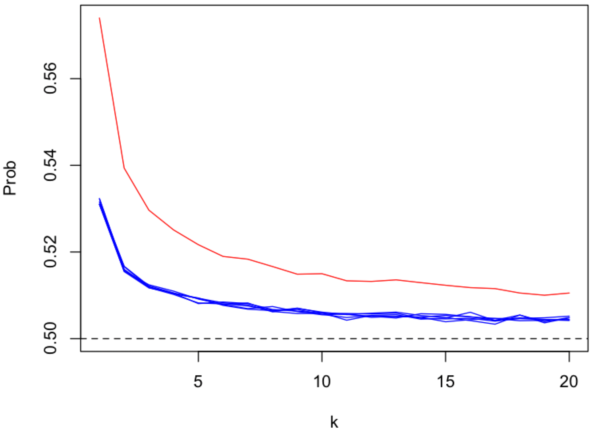
The probability as a function of plotted for , , i.e. , and (top to bottom). The case is plotted in red colour. The population size is equal to .
Summary of FIFO attack analysis
From above analysis, it follows that the probability of success of FIFO attack is reduced by:
-
Increasing the number of mix nodes .
-
Increasing the ratio , where a message is delayed by the sender node by (on average) and by the mix node by (on average).
-
Decreasing differences between latencies of communication links.
Bibliography
Das, D., Diaz, C., Kiayias, A., & Zacharias, T. (2024). Are continuous stop-and-go mixnets provably secure?. Proceedings on Privacy Enhancing Technologies. https://doi.org/10.56553/popets-2024-0136